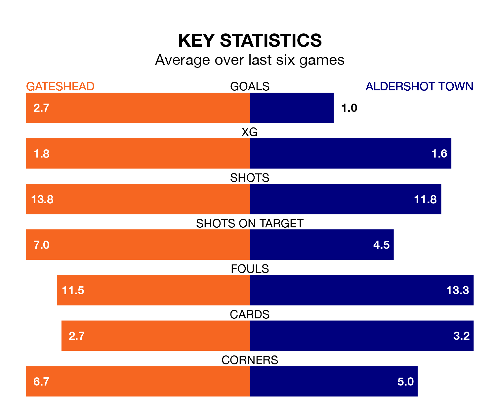

Gateshead host Aldershot Town at the Gateshead International Stadium on late Tuesday on the back of three consecutive wins in the National League.
Gateshead have picked up 12 points from their last six games, and they face a Shots side who lost their last match, and have collected five points from the last possible 18.
With 83 goals in 41 games so far this season, Gateshead are the league's third-highest scorers with 2.0 goals per game. And they are conceding fewer than average, letting in 57 goals at a rate of 1.4 per game.
Aldershot are also above average scorers, with 1.6 goals per game, compared to a league average of 1.5. They have conceded 1.8 goals per game.
In the last 10 years, Gateshead and Aldershot have played each other on 13 occasions. Gateshead won six of them, Aldershot four, and they drew three times.
On average, the Tynesiders scored 1.4 goals and the Shots 1.2 in those matches.
Their last meeting was on September 16, when they played out a 1-1 draw.
The Tynesiders are sixth in the table after 41 games, of which they have won 20 and drawn nine, earning 69 points.
Town are three places behind the hosts in ninth, with 19 wins and eight draws putting them on 65 points.
Gateshead's last match was on March 29, a 1-0 win against Rochdale, with Dajaune Brown getting the goal for the Tynesiders.
Aldershot lost 2-0 against Hartlepool United last time out, on Saturday.
Updated: 14:47 (UTC), 09/04/24